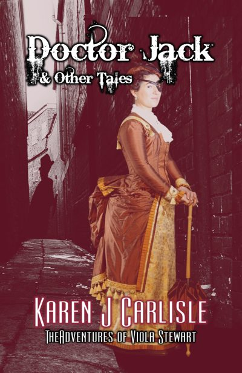
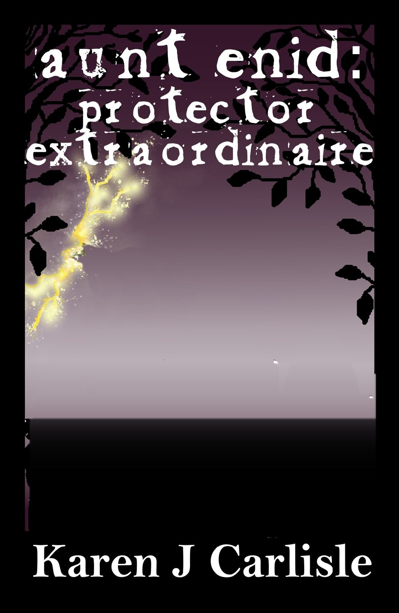
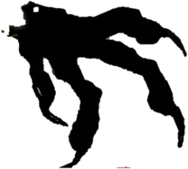
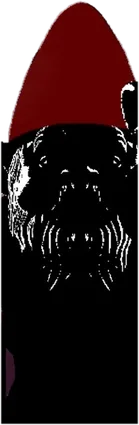
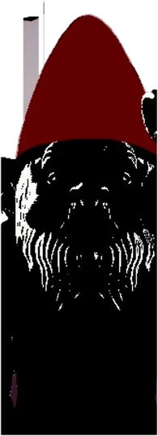
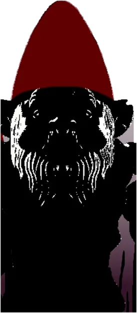
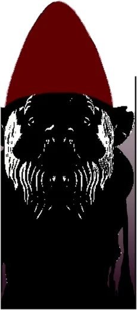
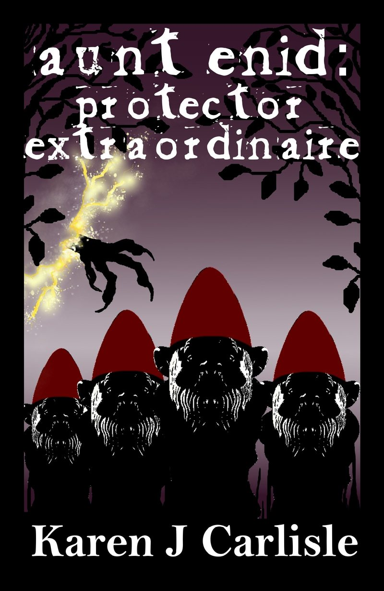
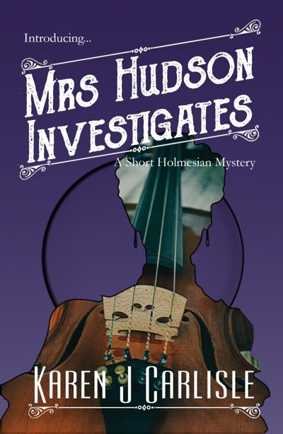
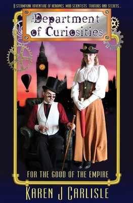

viola stewart
A widowed optician with a penchant for detectiving stumbles on a secret society of Men in Grey. Three books of tales, starting with Doctor Jack.






Something is coming. Something dark, trading souls for passage. And Adelaide is ground zero.
Only one person stands between The Dark and the fate of the world. She's seventy-something, and she has gnomes.
Meet Aunt Enid

Daemons, fairies, it's all real. The Otherworld is bleeding through cracks into our world.
Aunt Enid is just your average seventy-something year old. She loves to cook, she's a regular at bingo, and she spends hours in her garden, talking to her army of garden gnomes and fussing over the colour of her hydrangeas. Then people start disappearing, and her great niece Sally is drawn into a secret world.
The series goes on with A Fey Tale, and Twixtmas, an Aunt Enid Christmas story (of sorts).
Victorian mysteries with a steampunk-ish twist, and the women who solve them.

A widowed optician with a penchant for detectiving stumbles on a secret society of Men in Grey. Three books of tales, starting with Doctor Jack.

Holmes has gone missing and Watson's gone after him. So it's up to Mrs Hudson, with Mary Watson's help.

Miss Mathilda Meriwether has a secret. Actually, she has several. A steampunk adventure for the good of the Empire.
Karen J Carlisle writes in Adelaide, the city Aunt Enid protects.
She was an author guest of honour at Nullus Anxietas X, the Australian Discworld Convention, this April.
Most months you'll find her behind a table somewhere in South Australia: comic fairs, makers markets in Gawler, the SA Author Showcase in Salisbury, and a themed "Christmas in July" table at Golden Grove.
Friday 30 October to Sunday 1 November, Adelaide Showground, Wayville. Books from every series.